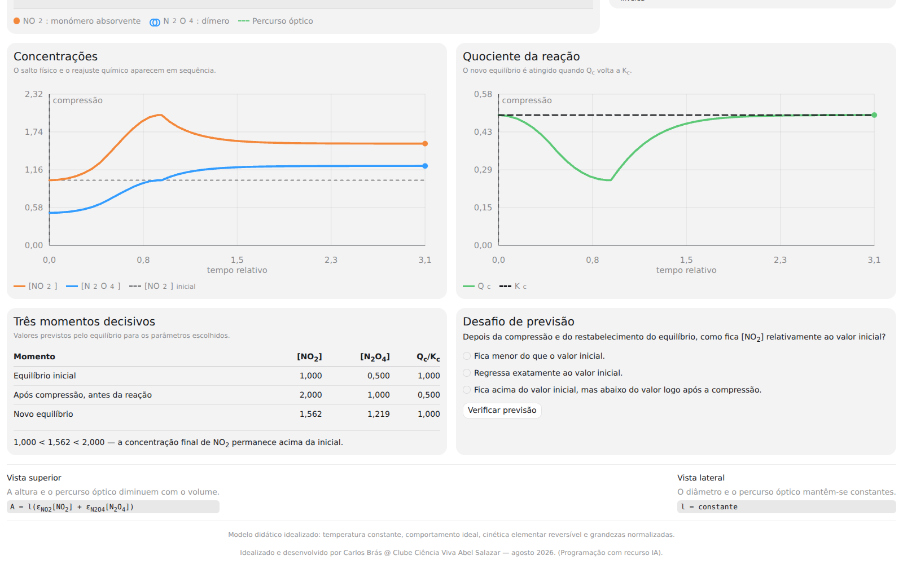
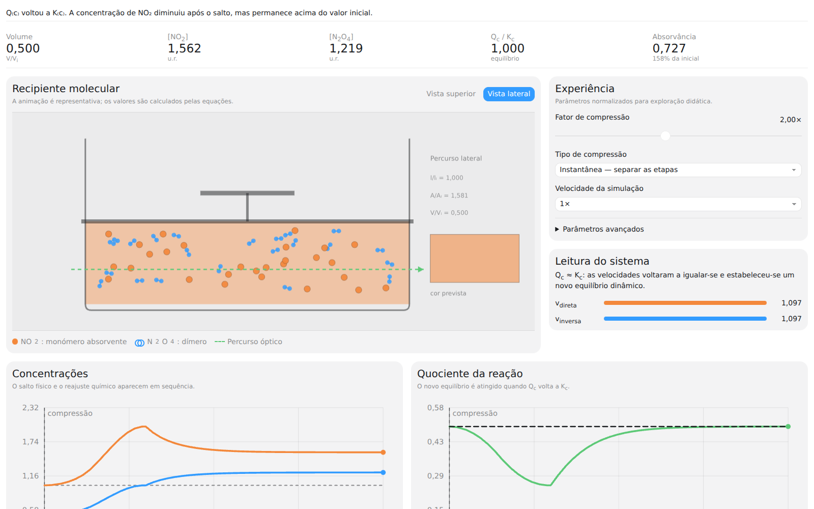

Equilíbrio inicial
As velocidades direta e inversa são iguais. O quociente da reação coincide com a constante de equilíbrio.
[NO₂] = 1,000[N₂O₄] = 0,500Q/K = 1,000V = 1,000
Simulação interativa · Química 11.º ano
Comprima o gás, observe o salto imediato das concentrações e acompanhe a resposta do sistema até ao novo equilíbrio. Partículas, gráficos, velocidades e cor evoluem em simultâneo.
Gratuito · funciona no navegador · utilizável offline · sem recolha de dados
Três momentos decisivos
Com os valores padrão e uma compressão para metade do volume, a simulação torna explícito aquilo que muitas vezes fica escondido numa expressão algébrica.
As velocidades direta e inversa são iguais. O quociente da reação coincide com a constante de equilíbrio.
O volume diminui antes de a reação avançar. As duas concentrações duplicam e Qc fica abaixo de Kc.
Forma-se mais N₂O₄ até Qc voltar a Kc. A concentração final de NO₂ permanece acima da inicial.
Aplicação completa
A representação molecular ajuda a construir intuição; os resultados quantitativos são calculados pelo modelo e apresentados em tempo real.



Recursos didáticos
O sentido da evolução é ligado diretamente à comparação entre o quociente da reação e a constante de equilíbrio.
Barras em tempo real mostram quando a reação direta domina e quando as duas velocidades voltam a igualar-se.
As concentrações e Qc/Kc evoluem juntamente com o êmbolo e as partículas.
É possível congelar qualquer instante, avançar em pequenos intervalos e reduzir ou aumentar a velocidade.
Um desafio curto confronta a ideia errada de que consumir NO₂ implica regressar abaixo da concentração inicial.
Concentrações, constante cinética, fator de compressão e coeficientes de absorção podem ser alterados.
A cor depende de como se observa
A absorvância não depende apenas da concentração de NO₂. O percurso percorrido pela luz também conta, e muda de forma diferente consoante a direção de observação.
l diminuiQuando a altura fica reduzida a metade, a concentração duplica mas o percurso ótico também fica reduzido a metade. No modelo padrão, não há escurecimento imediato.
l constanteO diâmetro do recipiente não muda. O aumento imediato da concentração produz um aumento imediato da absorvância.
Levar para a sala de aula
O pacote inclui a aplicação offline, documentação científica, guião didático, testes e código-fonte. Não requer instalação, conta nem ligação à Internet depois do download.
Clube Ciência Viva Abel Salazar — agosto 2026. Programação com recurso IA.